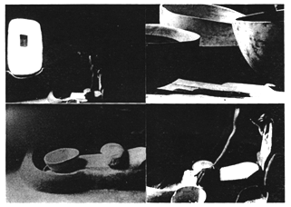
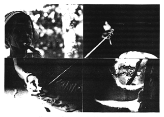
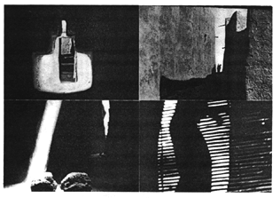

Writing: an on-going practice concerned not with inserting a "me" into language, but with creating an opening where the "me" disappears while "I" endlessly come and go.
--Trinh T. Minh-ha Woman, Native, Other, p. 31
Stills from Naked Spaces--Living Is Round
The triple bind
Neither black/red/yellow nor woman but poet or writer. For many of us, the question of priorities remains a crucial issue. Being merely "a writer" without doubt ensures one a status of far greater weight than being "a woman of color who writes" ever does. Imputing race or sex to the creative act has long been a means by which the literary establishment cheapens and discredits the achievements of non-mainstream women writers. She who "happens to be" a (non-white) Third World member, a woman, and a writer is bound to go through the ordeal of exposing her work to the abuse of praises and criticisms that either ignore, dispense with, or overemphasize her racial and sexual attributes. Yet the time has passed when she can confidently identify herself with a profession or artistic vocation without questioning and relating it to her color-woman condition. Today, the growing ethnic-feminist consciousness has made it increasingly difficult for her to turn a blind eye not only to the specification of the writer as historical subject (who writes? and in what context?), but also to writing itself as a practice located at the intersection of subject and history--a literary practice that involves the possible knowledge (linguistical and ideological) of itself as such. On the one hand, no matter what position she decides to take, she will sooner or later find herself driven into situations where she is made to feel she must choose from among three conflicting identities. Writer of color? Woman writer? Or woman of color? Which comes first? Where does she place her loyalties? On the other hand, she often finds herself at odds with language, which partakes in the white-male-is-norm ideology and is used predominantly as a vehicle to circulate established power relations. This is further intensified by her finding herself also at odds with her relation to writing, which when carried out uncritically often proves to be one of domination: as holder of speech, she usually writes from a position of power, creating as an "author" situating herself above her work and existing before it, rarely simultaneously with it. Thus, it has become almost impossible for her to take up her pen without at the same time questioning her relation to the material that defines her and her creative work. As focal point of cultural consciousness and social change, writing weaves into language the complex relations of a subject caught between the problems of race and gender and the practice of literature as the very place where social alienation is thwarted differently according to each specific context.
A critical difference from myself means that I am not i, am within and without i. I/i can be I or i, you and me both involved. We (with capital W) sometimes include(s), other times exclude(s) me. You and I are close, we intertwine; you may stand on the other side of the hill once in a while, but you may also be me, while remaining what you are and what i am not. The differences made
between
entities comprehended as absolute presences--hence the notions of
pure origin
and
true
self--are an outgrowth of a dualistic system of thought peculiar to the Occident (the "onto-theology" which characterizes Western metaphysics). They should be distinguished from the differences grasped both between
and
within
entities, each of these being understood as multiple presence. Not One, not two either. "I" is, therefore, not a unified subject, a fixed identity, or that solid mass covered with layers of superficialities one has gradually to peel off before one can see its true face. "I" is, itself, infinite layers.
Its complexity can hardly be conveyed through such typographic conventions as I, i, or I/i. Thus, I/i am compelled by the will to say/unsay, to resort to the entire gamut of personal pronouns to stay near this fleeing
and
static essence of Not-I. Whether I accept it or not, the natures of
I,i, you, s/he, We, we, they,
and
wo/man
constantly overlap. They all display a necessary ambivalence, for the line dividing
I
and
Not-I, us
and
them,
or
him
and
her
is not (cannot) always (be) as clear as we would like it to be. Despite our desperate, eternal attempt to separate, contain, and mend, categories always leak. Of all the layers that form the open (never finite) totality of "I," which is to be filtered out as superfluous, fake, corrupt, and which is to be called pure, true, real, genuine, original, authentic? Which, indeed, since all interchange, revolving in an endless process? (According to the context in which they operate, the superfluous can become the real; the authentic can prove fake; and so on.) Authenticity
as a need to rely on an "undisputed origin," is prey to an obsessive fear:
that of
losing a connection.
Everything must hold together. In my craving for a logic of being, I cannot help but loathe the threats of interruptions, disseminations, and suspensions. To begin, to develop to a climax, then, to end. To fill, to join, to unify. The order and the links create an illusion of continuity, which I highly prize for fear of nonsense and emptiness. Thus, a clear origin will give me a connection back through time, and I shall, by all means, search for that genuine layer of myself to which I can always cling. To abolish it in such a perspective is to remove the basis, the prop, the overture, or the finale--giving thereby free rein to indeterminancy: the result, forefeared, is either an anarchic succession of climaxes or a de(inex)pressive, uninterrupted monotony--and to enter into the limitless process of interactions and changes that nothing will stop, not even death. In other words, things may be said to be what they are, not exclusively in relation to what was and what will be (they should not solely be seen as clusters chained together by the temporal sequence of cause and effect), but also in relation to each other's immediate presences and to themselves as non/presences. The
real,
nothing else than a
code of representation,
does not (cannot) coincide with the lived or the performed. . . . 
--quoted from
Woman, Native, Other: Writing Postcoloniality and Feminism,
University of Indiana Press, 1989 on the pages noted. For notes on Trinh T. Minh-ha see "alerts". Trinh T. Minh-ha

 --Trinh T. Minh-ha
--Trinh T. Minh-ha

 from
Woman, Native, Other
from
Woman, Native, Other


TRINH T. MINH-HA
Words, fragments, and lines that I love for no sound reason; blanks, lapses, and silences that settle in like gaps of fresh air as soon as the inked space smells stuffy

-- Trinh T. Minh-ha,
Woman, Native, Other,
p. 25
Stills on pages 1 and 2 from
Naked Spaces--Living Is Round
Production photographs by Jean-Paul Bourdier